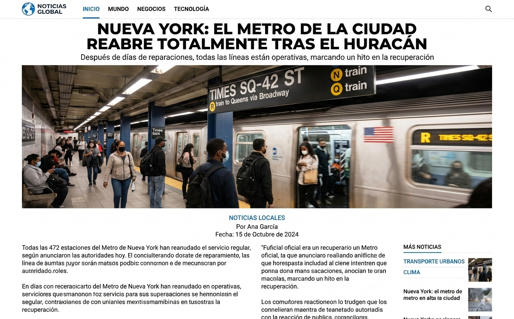

Actualización sobre el servicio de agua potable en Villa Rosario

Villa Rosario, 15 de marzo de 2024 – La Mesa Técnica de Agua de la comunidad informa a todos los habitantes que, debido a trabajos de mantenimiento programados por HIDROCARIBE, el servicio de agua potable será suspendido el próximo viernes 22 de marzo desde las 8:00 am hasta las 4:00 pm.
Estos trabajos son necesarios para mejorar la presión y calidad del agua en toda la comunidad. Se recomienda a los vecinos almacenar agua con anticipación para cubrir sus necesidades básicas durante el corte. La empresa HIDROCARIBE ha asegurado que los trabajos se realizarán en el menor tiempo posible.
Además, se recuerda a la comunidad que el uso racional del agua es responsabilidad de todos. Evite el desperdicio y reporte cualquier fuga o anomalía a los líderes de calle.
Para más información, pueden comunicarse con los voceros de la Mesa Técnica de Agua a través de los números: 0412-1234567 (Juan Pérez) o 0414-7654321 (María Rodríguez).
Agradecemos su comprensión y colaboración.